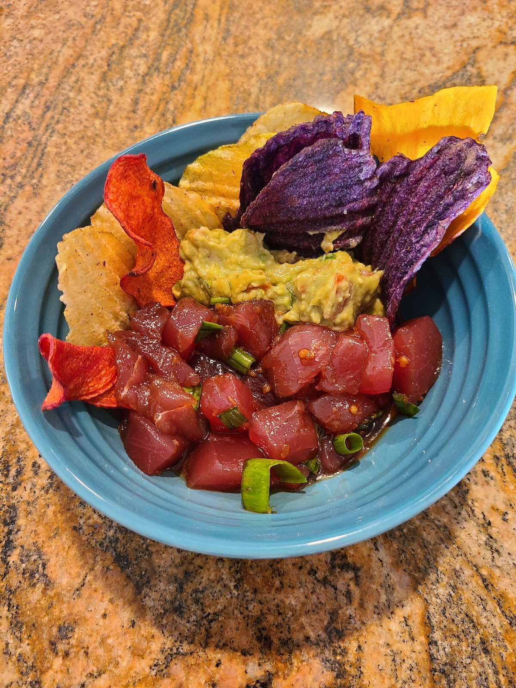

Ahi Poke and Guacamole

Ahi Poke and Guacamole
This classic Hawaiian dish of raw ahi and shoyu comes together to create a delicious appetizer or light meal. Serve with homemade guacamole and your favorite chips.
Servs 4
Ingredients
For the Ahi:
- 1 lb fresh sushi-grade ahi tuna
- 2 scallions
- 1/2 teaspoon fresh ginger, grated
- 1 garlic clove, minced
- 1/4 cup soy sauce
- 1 teaspoon sesame oil
- 1/4 teaspoon crushed red pepper flakes
- 1 teaspoon chili garlic sauce
- 1/2 teaspoon sea salt
For the Guacamole:
- 3 ripe avocados
- 1/2 small onion, finelly diced
- 2 Roma tomatoes, diced
- 3 tablesppons cilantro, finely chopped
- 1 jalapeno pepper, seeds remoced and finely diced
- 2 garlic cloves, minced
- 1 lime, juiced
- 1/2 teaspoon sea salt
Steps
Prepare the tuna:
- Combine all ingredients except Ahi in a large bowl and refrigerate for at least 30 minutes.
- Cute Ahi into 1/2 inch cubes and refrigerate.
- When ready to serve, toss Ahi and sauce together.
Prepare the guacamole:
- Slice the avocados in half, remove the pit, and scoop into a mixing bowl.
- Mash the avocado with a fork and make is as chunky or smooth as you would like.
- Add the remaining ingredients and stire together. Taste and adjust for salt and lime juice
- Serve immediately alongside poke and your favorite tortialla chips.